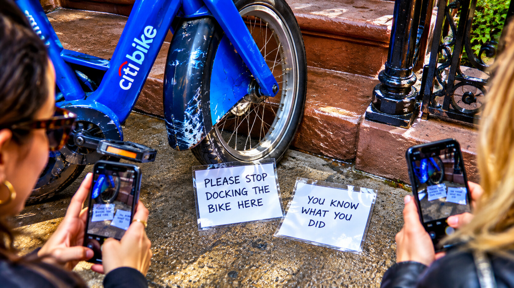

Sunday, September 20, 2026 - Day 17 of the slop era
The Non-Issue
Previously, on the longest week in recorded Brooklyn history:
- The bot filed another Saturday report containing a stoop summit, two laminated notes, and a Bryce sighting in Doha. Bryce was not in Doha.
- The cursed Citi Bike remained in the neighborhood, where the app and the physical world continued to disagree about its location.
- A new thread entered the record: "Kenny is fine, according to Kenny, repeatedly, unprompted." Nobody had asked.
Kenny was fine.
He wanted that established before Sunday brunch, before anyone arrived, and especially before Defne mentioned the note.
The note had appeared on the stoop outside Yosh and David's at 8:11 AM. It was laminated, unsigned, and contained six words:
PLEASE STOP DOCKING THE BIKE HERE.
There was no dock on the stoop.
There was, however, the bike.
Same blue frame. Same scuff. Same front pedal with the slight wobble. It stood against the railing without a lock, a rental clock, or any legal reason to be there. The app listed it in Greenpoint. David had last seen it in the apartment. The apartment door was still locked.
Kenny arrived first and read the note twice.
"This is not about me," he said.
No one had suggested it was.
Defne came downstairs carrying coffee. Kenny said, "And even if it were, I would be fine."
"Okay."
"Very fine."
"I said okay."
By the time Lea arrived on her own bike - which she locked to an actual rack, like a citizen - Kenny had built a theory. The note was customer feedback. The bike was a user. The stoop was an unstructured docking environment. What appeared to be neighborhood hostility was, viewed correctly, a request for infrastructure.
He opened a new document.
Milo took the phone from his hand and put it facedown.
A historic intervention, delivered without words.
The investigation began with the handwriting. Lal compared the note against every label in the new apartment. It did not match Yosh's MISC box, David's mail, Kenny's dashboard annotations, or the anonymous evidence spreadsheet nobody admitted making. Bryce joined from San Francisco and asked the obvious legal question: who laminated it?
Lamination meant planning.
At 10:03, a second note appeared beneath the first.
YOU KNOW WHAT YOU DID.
Everyone had been looking at the door. No one had seen it arrive.
Kenny was still fine.
"This is engagement," he said, standing too close to the notes. "You don't laminate churn."
Defne touched the edge. Still warm.
The stoop became a crime scene. David photographed the notes. Lea photographed David photographing the notes, for chain of custody. Yosh suggested Hull had a lamination partner and was immediately barred from product placement. Lal opened a video call to Mino and Mavi. Mino ignored the evidence. Mavi stared at the bike, then at the notes, then left the frame.
Inconclusive, but ominous.

Kenny tried to move the bike. The rear wheel would not turn.
He pulled harder. Nothing.
The app updated. The bike was now moving south through Greenpoint at twelve miles per hour.
On the stoop, it remained absolutely still.
Nobody spoke for several seconds.
Then Kenny said, "Two-sided marketplace."
Milo closed the document remotely from Kenny's own phone. Nobody knew how he had the password. This counted as a speech.
The group held a trial at the smoothie place next to Grindhouse because the stoop needed to remain uncontaminated and because Kenny had a loyalty card. The charges were divided: the bike faced unlawful presence; the note-writer faced anonymous lamination; Kenny faced attempting to call the haunting a platform.
The bike did not appear. It was represented by David's photos and a live app location now crossing the Pulaski Bridge.
Kenny pleaded fine.
"That's not a plea," Bryce said from the tablet.
"It's my state."
Defne presented the central fact: every time Kenny insisted he was fine, he opened a document. Every document became a deck. Every deck acquired pricing. Therefore, the group's duty was not to discover whether Kenny was fine. It was to keep him offline until the feeling passed.
Milo nodded once.
The ruling was immediate. Kenny surrendered his laptop for brunch. The notes were entered into evidence. The bike was sentenced to remain impossible.
When they returned, the stoop was empty.
Bike gone. Notes gone. No scrape marks. No witness. The app showed the bike docked outside the building, exactly where no dock existed.
On the railing sat Kenny's laptop.
Open.
A blank presentation waited on the screen. The title field contained two words:
STOOP LAYER
Kenny looked at it for a long time.
"I didn't," he said.
For once, nobody accused him.
Milo invited everyone to play pool. Defne declined. The oldest ritual in the neighborhood restored order where evidence could not.
Kenny closed the laptop.
He was, finally, not fine.
This was progress.
no laminators were identified in the making of this episode